지표면 편집 (CustomLand)
목차
- 지표면 편집 이해하고 시작하기
- 편집 영역 선택하기
- 목표 고도로 지표면 편집하기
- 부피와 토공량 계산하기
- 그리기와 편집 결과 정리하기
- 경사면과 텍스처 설정하기
- 동적 편집을 안전하게 적용하기
- 지표면: 3D 지도에서 보이는 땅의 표면입니다.
- 지형: 지표면의 높낮이와 모양을 뜻합니다.
- DEM(Digital Elevation Model): 지표면의 높이를 일정한 격자마다 기록한 데이터입니다.
- HeightLayer: DEM을 이용해 지표면의 높낮이를 화면에 표시하고, 지표면 편집에 필요한 원본 높이를 제공하는 레이어입니다.
- 목표 고도: 편집이 완료된 지표면의 최종 높이를 직접 지정하는 값입니다.
CustomLand는 지정한 영역의 지표면을 원하는 고도로 바꾸고, 편집 전후의 부피와 토공량을 계산하는 기능입니다.
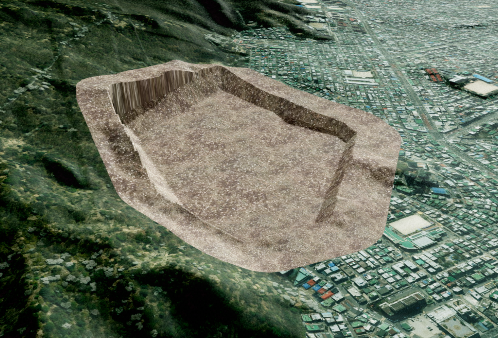
1. 지표면 편집 이해하고 시작하기
지표면 편집은 아래 순서대로 진행하면 됩니다.
- 편집할 지역을 포함하는
HeightLayer를 화면에 표시합니다. CustomLand분석 기능을 활성화합니다.Polygon또는Box방식으로 편집 영역을 선택합니다.- 선택한 경계 좌표와 목표 고도를
addCustomLand()에 전달합니다. - 필요하면 부피를 계산하거나 편집 결과를 제거합니다.
먼저 확인해 주세요.
편집할 영역 전체가 화면에 표시된
HeightLayer안에 포함되어 있어야 합니다.
원본 DEM을 찾을 수 없으면 편집 지형을 만들거나 부피를 계산하기 어렵습니다.
레이어의 데이터 레벨이 높을수록 더 촘촘한 DEM을 사용할 수 있지만, 실제 정밀도와 처리 시간은 제공되는 데이터에 따라 달라질 수 있습니다.
API
U3dApp.activeAnalysis(name) : 이름에 해당하는 분석 기능을 활성화하고 반환하는 함수
매개변수
name(string) : 활성화할 분석 기능 이름. 지표면 편집은CustomLand를 사용. 필수
반환값
return(UAnalyCustomLand | undefined) : 활성화된 지표면 편집 분석 객체. 분석 기능을 찾지 못하면undefined
API
U3dApp.getAnalysis(name) : 이름에 해당하는 분석 기능을 반환하는 함수
매개변수
name(string) : 활성화할 분석 기능 이름. 지표면 편집은CustomLand를 사용. 필수
반환값
return(UAnalyCustomLand | undefined) : 활성화된 지표면 편집 분석 객체. 분석 기능을 찾지 못하면undefined
1. 지표면 편집 기능 활성화하기
activeAnalysis()를 호출하면 분석 기능과 입력 처리가 함께 활성화됩니다.
따라서 analy.active()를 따로 호출하지 않아도 됩니다.
const analy = app.activeAnalysis('CustomLand');
if (!analy) {
throw new Error('CustomLand 분석 기능을 찾을 수 없습니다.');
}
//또는 U3dApp.getAnalysis('CustomLand')를 호출하여 분석 객체를 반환 받은 후에 활성화 해줍니다.
let analy = app.getAnalysis('CustomLand');
analy.active();
아래 이미지는 지표면을 일정한 고도로 바꾼 결과를 위쪽과 옆쪽에서 본 모습입니다.
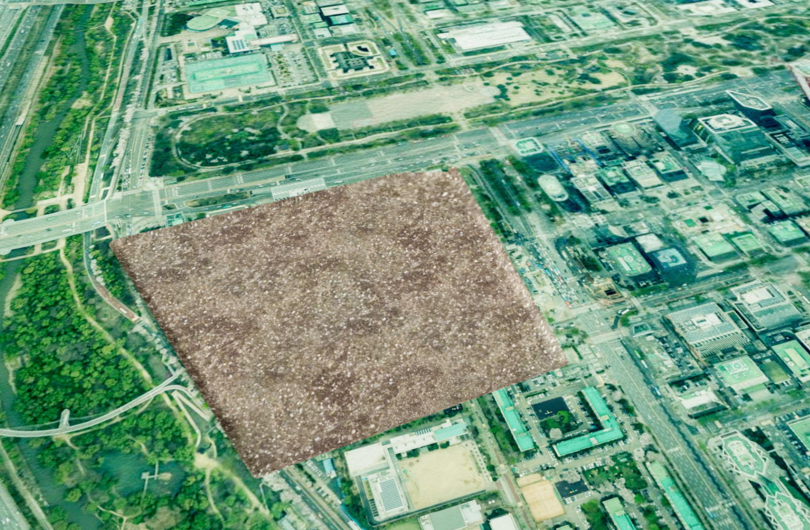
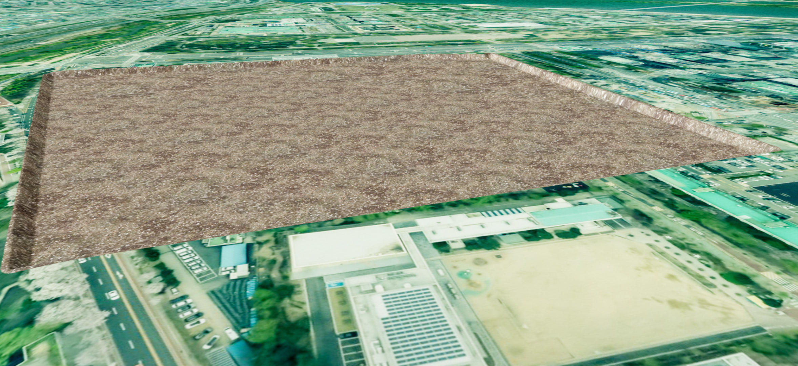
2. 편집 영역 선택하기
편집하려는 영역의 모양에 맞춰 Polygon 또는 Box 방식을 선택할 수 있습니다.
| 선택 방식 | 적합한 영역 | 입력 방법 | 입력 완료 |
|---|---|---|---|
Polygon | 경계가 여러 번 꺾인 불규칙한 영역 | 지표면의 경계점을 차례로 클릭 | 마지막 점에서 더블클릭 |
Box | 직사각형 영역 | 서로 마주 보는 두 모서리를 차례로 클릭 | 두 번째 클릭 |
경계가 불규칙한 영역은 세 개 이상의 점을 찍는 Polygon 방식이 편리합니다.
직사각형 영역은 Box 방식을 선택한 뒤 서로 마주 보는 두 모서리를 차례로 클릭해 주세요.
화면을 드래그하지 않아도 됩니다.
API
UAnalyCustomLand.setSelectType(type) : 편집 영역을 입력하는 방식을 설정하는 함수
매개변수
type(string) :Polygon또는Box. 필수
API
UAnalyCustomLand.getGeoVertex() : 현재 선택한 영역의 경계 좌표를 반환하는 함수
반환값
return(GeoPosition[]) : 편집 영역의 위경도 경계 좌표 목록
1. Polygon으로 영역 선택하기
analy.setSelectType('Polygon');
const polygonGeoVertex = analy.getGeoVertex();
- 화면에서 경계 지점을 순서대로 클릭해 자유로운 형태의 영역을 지정합니다.
- 영역 지정이 끝나면 더블클릭하여 그리기를 종료합니다.
- 선택한 영역의 좌표는 analy.getGeoVertex()로 가져올 수 있습니다.
2. Box로 영역 선택하기
analy.setSelectType('Box');
const boxGeoVertex = analy.getGeoVertex();
- 화면을 한 번 클릭하여 사각형 영역의 시작 지점을 지정합니다.
- 다른 위치를 한 번 더 클릭하면 두 지점을 기준으로 사각형 영역이 생성되고, 선택이 자동으로 완료됩니다.
- 선택한 영역의 좌표는 analy.getGeoVertex()로 가져올 수 있습니다.
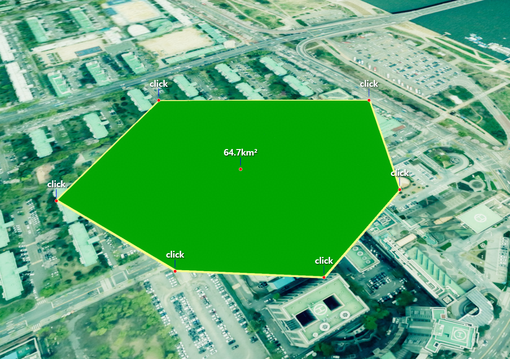
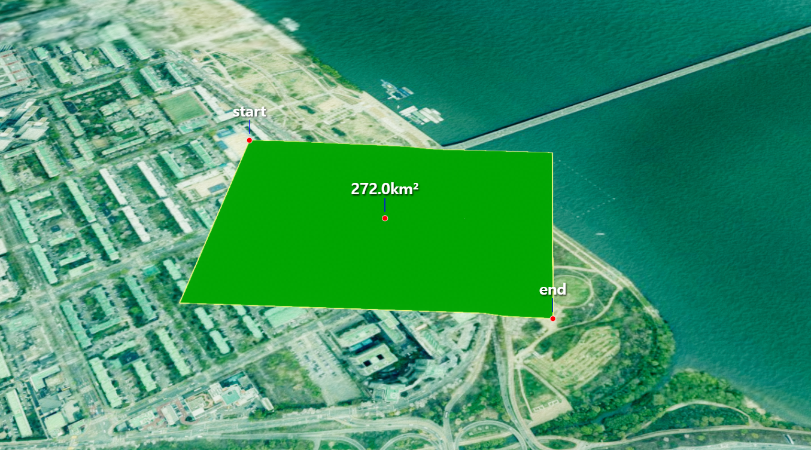
getGeoVertex()가 반환하는 각 좌표에서x는 경도,y는 위도,z는 경계점의 높이입니다.z가0으로 표시될 수도 있으며, 편집 결과의 높이는 이 값이 아니라addCustomLand()에 전달하는height로 결정됩니다.Box결과는 직사각형을 닫기 위해 첫 좌표가 마지막에 한 번 더 포함된 다섯 개의 좌표로 반환됩니다.
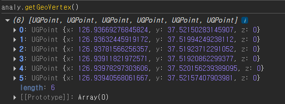
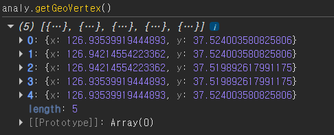
3. 목표 고도로 지표면 편집하기
선택한 경계 좌표와 목표 고도를 addCustomLand()에 전달하면 편집된 지표면을 만들 수 있습니다.
height값에 유의해 주세요.
height는 현재 지면에서 더하거나 뺄 높이가 아니라, 편집이 끝난 뒤의 절대 고도입니다. 단위는 미터(m)입니다.
예를 들어 현재 지표면의 고도가 80m인 곳에 height: 100을 지정하면 지표면이 20m 높아집니다.
API
UAnalyCustomLand.addCustomLand(options) : 하나 이상의 편집 지형을 생성하는 비동기 함수
매개변수
options(object | object[]) : 편집 지형 생성 옵션 또는 옵션 목록. 필수options.id(string) : 편집 지형의 고유 ID. 생략하면 자동 생성options.name(string) : 편집 지형 이름. 생략하면 ID 사용options.geoVertex(GeoPosition[]) : 편집 영역의 위경도 경계 좌표. 필수options.height(number) : 편집 후 목표 고도. 단위: m. 필수options.dataLevel(number) : 편집에 사용할 DEM 타일 레벨. 생략하면 영역을 포함하는HeightLayer의 설정 사용
반환값
return(Promise<void>) : 편집 지형 생성 완료를 알려 주는 Promise
1. 선택한 영역 편집하기
나중에 부피를 계산하거나 결과를 제거하기 쉽도록 알아보기 쉬운 id를 지정해 주세요.
이미 사용 중인 id로는 새로운 편집 지형을 만들 수 없습니다.
const geoVertex = analy.getGeoVertex();
if (geoVertex.length < 3) {
throw new Error('먼저 편집 영역을 선택해 주세요.');
}
await analy.addCustomLand({
id: 'land1',
name: '지형편집1',
geoVertex,
height: 100,
});
addCustomLand() 앞에 await를 사용하면 지형 생성이 끝난 뒤 부피 계산이나 다음 편집을 이어서 실행할 수 있습니다.
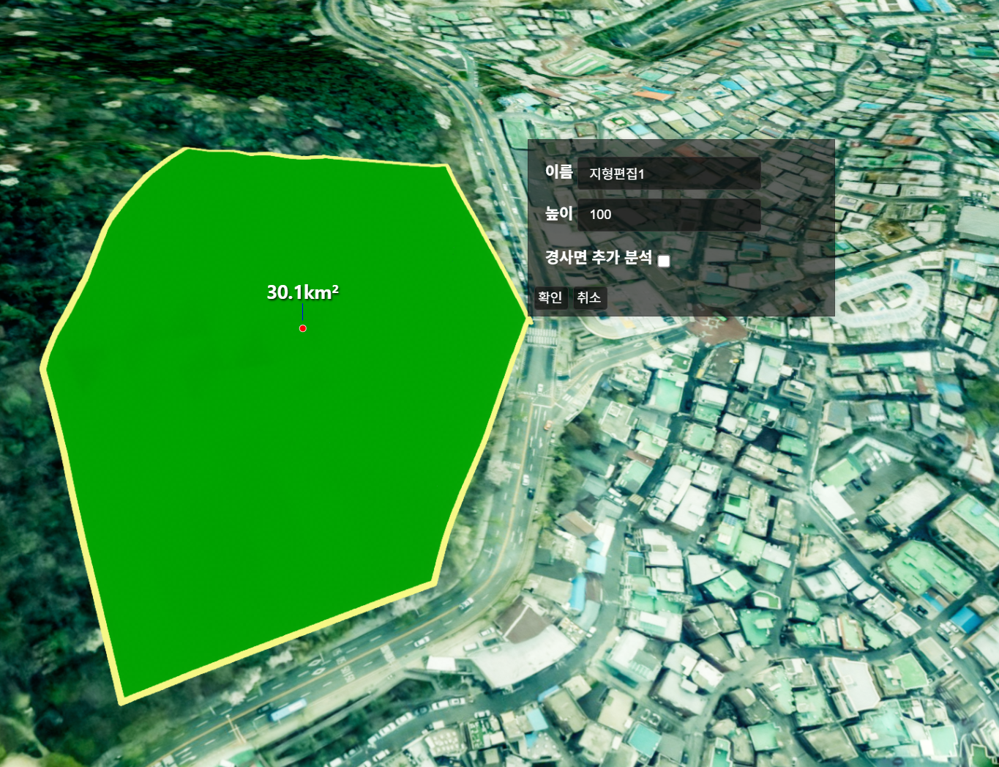
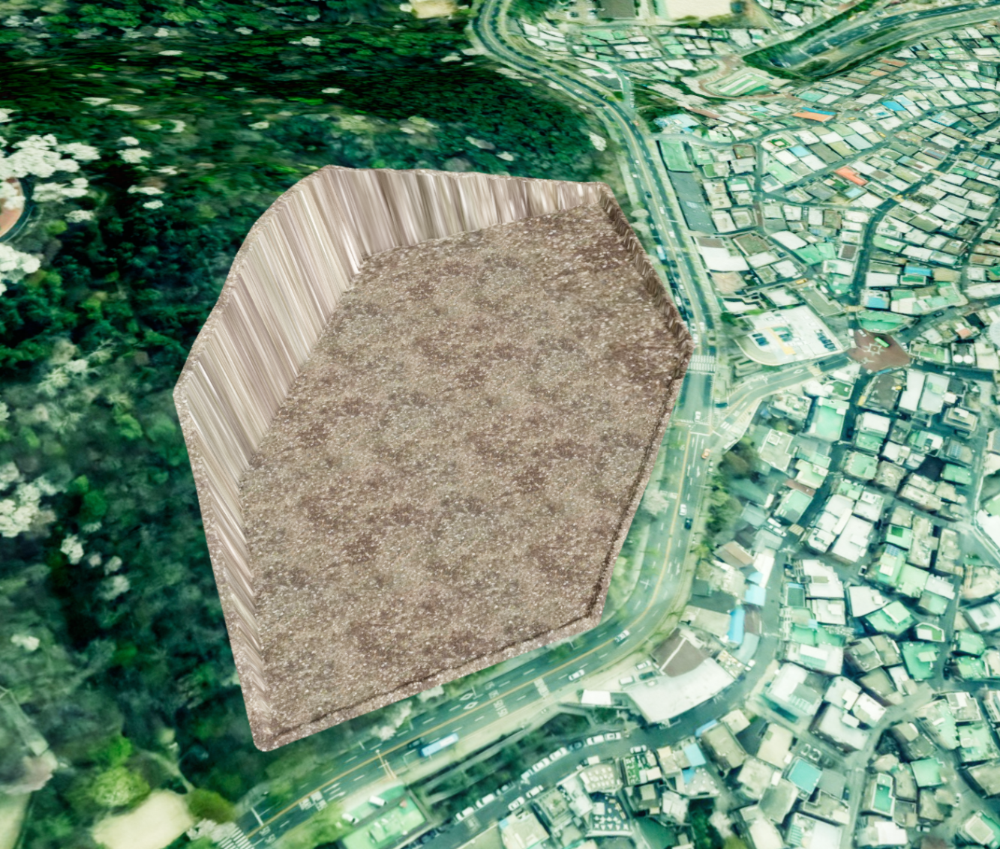
4. 부피와 토공량 계산하기
편집 지형을 만든 뒤에는 원본 DEM과 목표 고도를 비교해 부피와 토공량도 확인할 수 있습니다.
- 부피: 지표면의 높이와 면적을 함께 계산한 공간의 크기이며 단위는 세제곱미터(m³)입니다.
- 절토량: 목표 고도보다 높은 땅을 깎아내야 하는 양입니다.
- 성토량: 목표 고도보다 낮은 땅을 흙 등으로 채워야 하는 양입니다.
- 토공량 차이: 원본 부피에서 편집 부피를 뺀 값입니다. 양수이면 절토가 더 많고, 음수이면 성토가 더 많습니다.
API
UAnalyCustomLand.getVolume(id, progressFunc) : 지정한 편집 지형의 부피를 계산하는 함수
매개변수
id(string) : 계산할 편집 지형 ID. 필수progressFunc(function) : 계산 진행 상태를 받을 함수. 생략 가능
반환값
return(Promise<CustomLand> | undefined) : 계산이 끝난 편집 지형. ID를 찾지 못하면undefined
계산이 끝난 CustomLand에서 주로 확인하는 값은 다음과 같습니다.
| 값 | 의미 |
|---|---|
beforeVolume | 편집 전 원본 부피 |
volume | 목표 고도로 편집한 뒤의 부피 |
cutVolume | 절토량 |
fillVolume | 성토량 |
averageHeight | 영역 안 원본 지표면의 평균 고도 |
minHeight | 영역 안 원본 지표면의 최저 고도 |
maxHeight | 영역 안 원본 지표면의 최고 고도 |
getDifference() | 원본 부피에서 편집 부피를 뺀 토공량 차이 |
1. 편집 전후 부피와 토공량 확인하기
const volumeTask = analy.getVolume('land1');
if (!volumeTask) {
throw new Error('land1 편집 지형을 찾을 수 없습니다.');
}
const land = await volumeTask;
console.table({
원본부피: land.beforeVolume,
편집부피: land.volume,
절토량: land.cutVolume,
성토량: land.fillVolume,
토공량차이: land.getDifference(),
});
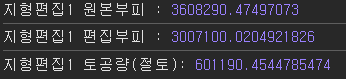
5. 그리기와 편집 결과 정리하기
영역 선택만 취소할지, 이미 만든 편집 지형까지 제거할지에 따라 알맞은 정리 방법을 선택해 주세요.
| 호출 | 정리되는 내용 |
|---|---|
clear(false) | 현재 선택 중인 경계점과 그리기 표시만 정리하고 생성된 편집 지형은 유지 |
clear() | 현재 그리기 표시와 생성된 모든 편집 지형을 함께 제거 |
removeCustomLandById(id) | 지정한 ID의 편집 지형 한 개만 제거 |
removeCustomLandAll() | 생성된 모든 편집 지형을 제거 |
API
UAnalyCustomLand.clear(useRemoveEditLandAll) : 현재 그리기 상태를 초기화하고 필요에 따라 모든 편집 지형을 제거하는 함수
매개변수
useRemoveEditLandAll(boolean) : 모든 편집 지형도 제거할지 여부. 기본값:true
API
UAnalyCustomLand.removeCustomLandById(id) : 지정한 ID의 편집 지형을 제거하는 함수
매개변수
id(string) : 제거할 편집 지형 ID. 필수
API
UAnalyCustomLand.removeCustomLandAll() : 생성된 모든 편집 지형을 제거하는 함수
1. 필요한 범위만 정리하기
// 선택 중인 경계점만 취소하고 생성 결과는 유지합니다.
analy.clear(false);
// land1 한 개만 제거합니다.
analy.removeCustomLandById('land1');
// 생성된 편집 지형을 모두 제거합니다.
analy.removeCustomLandAll();
clear()를 인자 없이 호출하면 removeCustomLandAll()과 마찬가지로 생성된 편집 지형까지 모두 제거됩니다.
생성 결과를 유지하고 싶다면 clear(false)를 사용해 주세요.
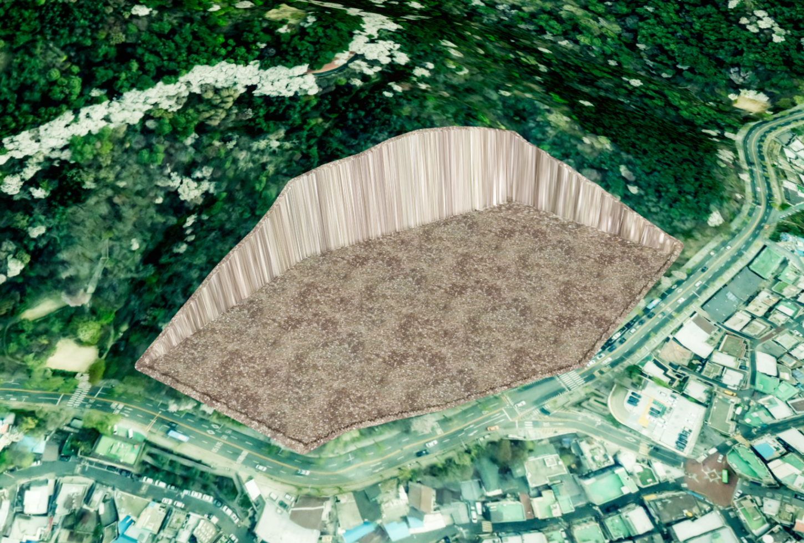
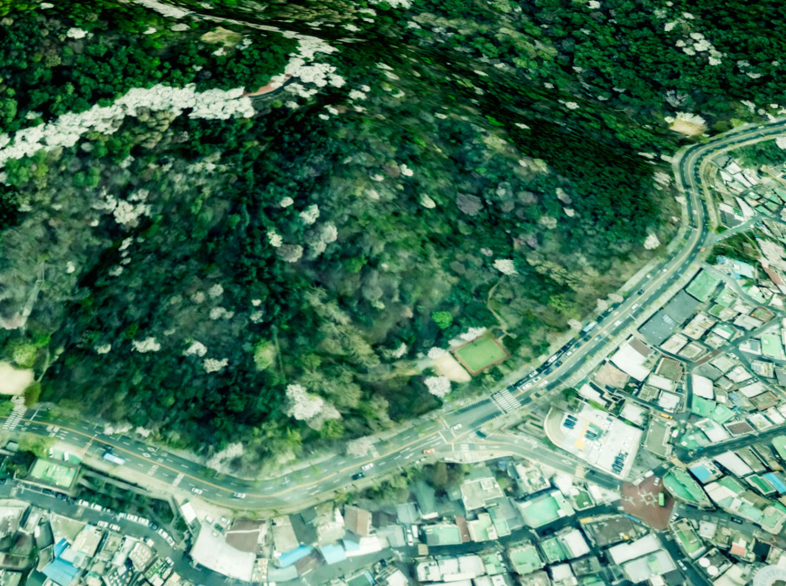
6. 경사면과 텍스처 설정하기
기본 설정에서는 선택한 경계와 목표 고도 사이에 수직에 가까운 옆면이 만들어집니다.
주변 지표면과 더 자연스럽고 완만하게 연결하고 싶다면 경사면 옵션을 사용해 보세요.
- 경사면: 서로 다른 높이의 두 지표면을 비스듬히 연결하는 면입니다.
- 내부 경사면: 선택한 경계 안쪽에 경사면을 만들고, 평평한 편집 영역을 줄이는 방식입니다.
- 외부 경사면: 선택한 경계 바깥쪽으로 경사면을 확장하고, 선택 영역 안쪽의 평평한 면을 유지하는 방식입니다.
- 텍스처: 편집한 지표면 위에 입히는 흙, 잔디 같은 이미지입니다.
addCustomLand()에서 사용할 수 있는 고급 옵션은 다음과 같습니다.
| 옵션 | 의미 | 기본값 |
|---|---|---|
inclineEdit | 경사면을 생성할지 여부 | false |
insideIncline | true이면 내부, false이면 외부 경사면 생성 | false |
inclineRate | 높이 차이에 비례해 경사면이 차지하는 범위를 조절 | 1 |
insidePrecision | 내부 경사면 경계를 보간하는 정밀도. 값이 클수록 경계가 부드러워지지만 계산량도 증가 | 10 |
useTexture | 편집 지표면에 텍스처를 표시할지 여부 | true |
textureUrl | 사용할 텍스처 이미지 URL. 생략하면 내장 기본 이미지 사용 | 내장 이미지 |
insideIncline, inclineRate, insidePrecision 옵션은 inclineEdit: true일 때 적용됩니다.
원활하게 생성하려면 경사면을 포함한 전체 영역이 화면에 표시된 HeightLayer 안에 들어오는지 확인해 주세요.
1. 내부 또는 외부 경사면 만들기
const geoVertex = analy.getGeoVertex();
await analy.addCustomLand({
id: 'land-incline-inside',
geoVertex,
height: 100,
inclineEdit: true,
insideIncline: true,
inclineRate: 1,
insidePrecision: 10,
});
외부 경사면을 만들고 싶다면 insideIncline: false로 설정하면 됩니다.
같은 영역에 두 결과를 동시에 만들면 서로 겹칠 수 있으니, 비교할 때는 이전 결과를 먼저 제거해 주세요.
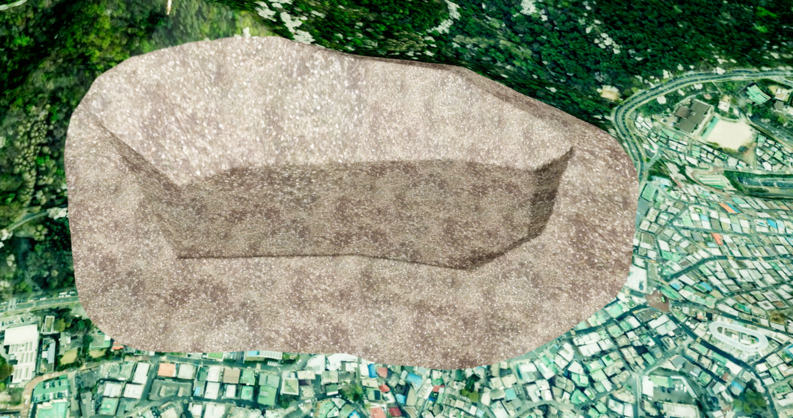
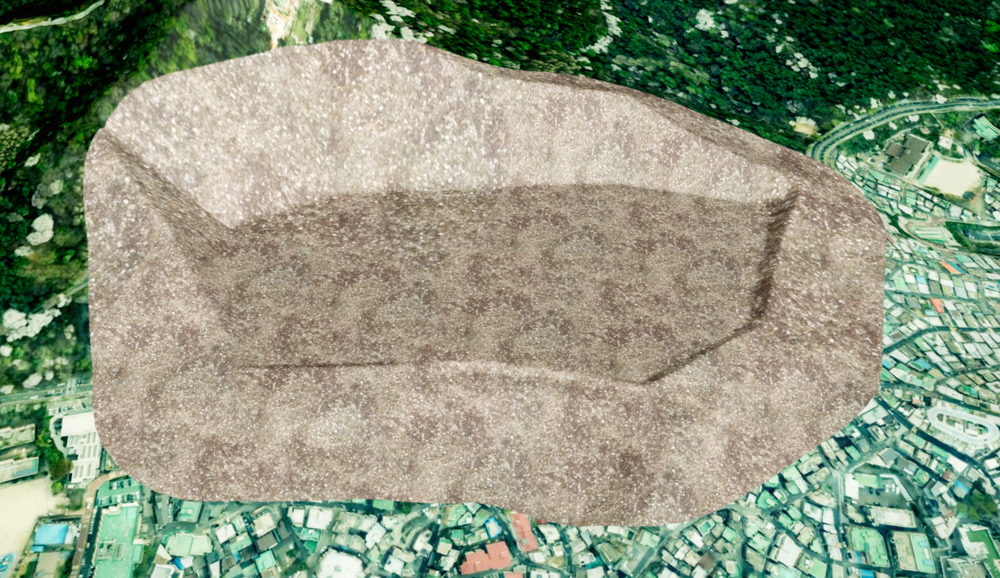
경사면의 부피 차이도 계산할 수 있습니다.
const inclineVolumeTask = analy.getVolume('land-incline-inside');
if (inclineVolumeTask) {
const land = await inclineVolumeTask;
console.log('경사면 원본 부피:', land.inclineBeforeVolume);
console.log('경사면 편집 부피:', land.inclineVolume);
console.log('경사면 토공량 차이:', land.getInclineDifference());
}
2. 텍스처 표시 방식 정하기
useTexture: true로 설정하고 textureUrl을 생략하면 내장 텍스처가 자동으로 적용됩니다.
별도의 이미지를 사용하고 싶다면 브라우저에서 접근할 수 있는 URL을 지정해 주세요.
URL이 올바르지 않거나 이미지를 불러오지 못하면 텍스처가 표시되지 않을 수 있습니다.
await analy.addCustomLand({
id: 'land-with-default-texture',
geoVertex,
height: 100,
useTexture: true,
});
텍스처가 필요하지 않으면 useTexture: false를 지정합니다.
7. 동적 편집을 안전하게 적용하기
동적 편집은 마우스를 움직이는 동안 작은 편집 영역을 반복해서 생성하여, 지표면이 실시간으로 변경되는 것처럼 표현하는 응용 방식입니다.
dynamicEdit과 같은 별도의 공개 옵션이 엔진의 동작을 변경하는 것은 아니며, mousemove 이벤트와 addCustomLand()를 조합하여 구현할 수 있습니다.
다만 mousemove 이벤트는 매우 자주 발생하기 때문에 이벤트가 발생할 때마다 addCustomLand()를 호출하면 편집 지형 생성과 비동기 작업이 계속 누적되어 화면 성능이 저하될 수 있습니다.
따라서 실제 기능을 구현할 때는 다음과 같은 처리를 함께 적용하는 것을 권장합니다.
- 일정 시간 간격으로만 편집 영역을 갱신합니다.
- 이전 미리보기 지표면을 제거한 후 동일한 ID로 다시 생성합니다.
- 이전 생성 작업이 완료되기 전에는 다음 생성 작업을 시작하지 않습니다.
- 드래그 중에는 카메라 이동을 잠그고, 편집이 끝나면 다시 사용할 수 있도록 해제합니다.
- 위경도 좌표의 동일한 차이는 지역에 따라 실제 거리가 달라질 수 있으므로, 프로젝트에서 사용하는 좌표·거리 변환 방식을 적용합니다.
위 예제의 createPreviewGeoVertex()는 현재 마우스 위치의 중심 좌표를 기준으로 미리보기 영역의 경계 좌표를 계산하는 프로젝트별 함수라고 가정합니다.
// 동적 편집에서 반복해서 사용할 미리보기 지표면 ID입니다.
// 같은 ID를 사용하면 이전 미리보기를 제거한 뒤 새로운 위치에 다시 생성할 수 있습니다.
const DYNAMIC_LAND_ID = 'dynamic-preview';
// mousemove 이벤트마다 지표면을 생성하지 않도록 갱신 간격을 제한합니다.
// 아래 예제에서는 최대 100ms마다 한 번씩 미리보기를 갱신합니다.
const UPDATE_INTERVAL_MS = 100;
// 현재 마우스 드래그를 이용한 동적 편집이 진행 중인지 나타냅니다.
let isDynamicEditing = false;
// 이전 addCustomLand() 작업이 아직 진행 중인지 나타냅니다.
// 비동기 생성 작업이 중복으로 실행되는 것을 방지하기 위해 사용합니다.
let isUpdating = false;
// 마지막으로 미리보기 지표면 갱신을 시작한 시간을 저장합니다.
// UPDATE_INTERVAL_MS와 함께 사용하여 갱신 빈도를 제한합니다.
let lastUpdatedAt = 0;
app.on('mousedown', () => {
// 편집 중 마우스 이동이 카메라 조작으로 처리되지 않도록
// 드래그가 시작되면 카메라 이동을 잠급니다.
app.disableCameraMove(true);
// mousemove 이벤트에서 동적 편집을 수행할 수 있도록 상태를 활성화합니다.
isDynamicEditing = true;
});
app.on('mouseup', () => {
// 마우스 드래그가 끝나면 동적 편집을 종료합니다.
isDynamicEditing = false;
// 편집이 끝난 후에는 다시 카메라를 조작할 수 있도록 이동 제한을 해제합니다.
app.disableCameraMove(false);
});
app.on('mousemove', async (event) => {
const now = performance.now();
// 다음 경우에는 새로운 미리보기 지표면을 생성하지 않습니다.
//
// 1. 현재 드래그 편집 중이 아닌 경우
// 2. 이전 addCustomLand() 작업이 아직 끝나지 않은 경우
// 3. 마지막 갱신 이후 UPDATE_INTERVAL_MS만큼 시간이 지나지 않은 경우
//
// 이를 통해 빈번한 mousemove 이벤트로 인해
// 지표면 생성 작업이 과도하게 누적되는 것을 방지합니다.
if (
!isDynamicEditing ||
isUpdating ||
now - lastUpdatedAt < UPDATE_INTERVAL_MS
) {
return;
}
// 현재 마우스 위치를 지리 좌표로 변환합니다.
const center = app.pixelToGeographic(event, true);
// 유효한 지리 좌표를 얻지 못한 경우에는 편집을 수행하지 않습니다.
if (!center) {
return;
}
// 새로운 지표면 생성 작업이 시작되었음을 기록합니다.
isUpdating = true;
// 현재 시간을 마지막 갱신 시간으로 저장하여
// 다음 mousemove 이벤트의 실행 간격을 제한합니다.
lastUpdatedAt = now;
try {
// 이전 위치에 생성한 미리보기 지표면을 제거합니다.
// 미리보기를 계속 누적하지 않고 하나의 영역만 유지하기 위한 처리입니다.
analy.removeCustomLandById(DYNAMIC_LAND_ID);
// 현재 마우스 위치를 기준으로 새로운 미리보기 지표면을 생성합니다.
//
// createPreviewGeoVertex()는 중심 좌표 주변의 경계 좌표를 계산하는
// 프로젝트별 함수라고 가정합니다.
//
// 위경도 좌표에서 동일한 좌표 차이가 항상 동일한 실제 거리를 의미하지 않으므로,
// 실제 서비스에서는 프로젝트에서 사용하는 좌표·거리 변환 방식을 적용하는 것을 권장합니다.
await analy.addCustomLand({
id: DYNAMIC_LAND_ID,
geoVertex: createPreviewGeoVertex(center),
height: 20,
});
} catch (error) {
// 지표면 생성 또는 제거 과정에서 오류가 발생한 경우 확인할 수 있도록 출력합니다.
console.error('동적 지표면 편집에 실패했습니다.', error);
} finally {
// 성공 여부와 관계없이 현재 생성 작업이 종료되었음을 표시합니다.
// 이후 mousemove 이벤트에서 다음 미리보기를 생성할 수 있습니다.
isUpdating = false;
}
});
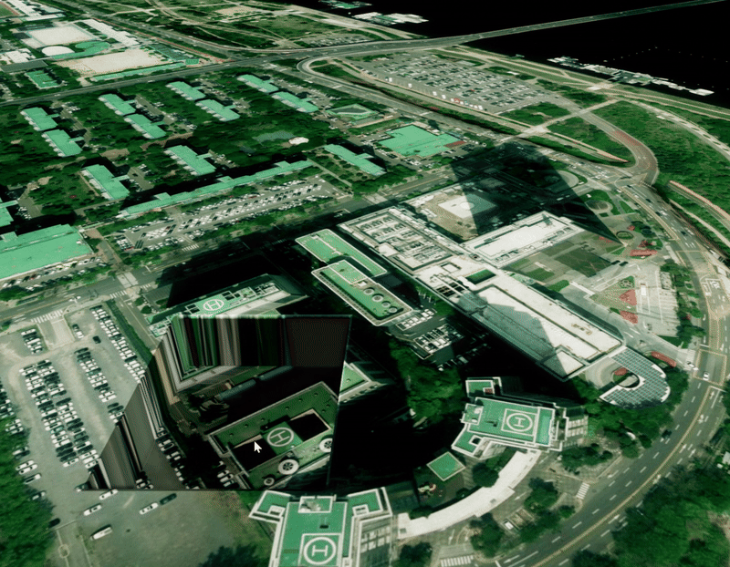